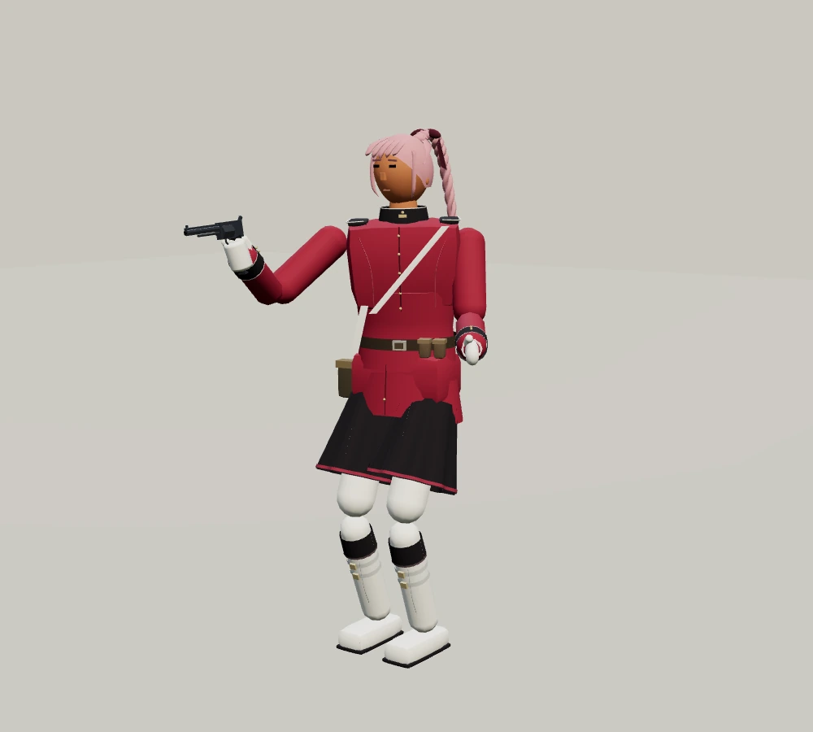
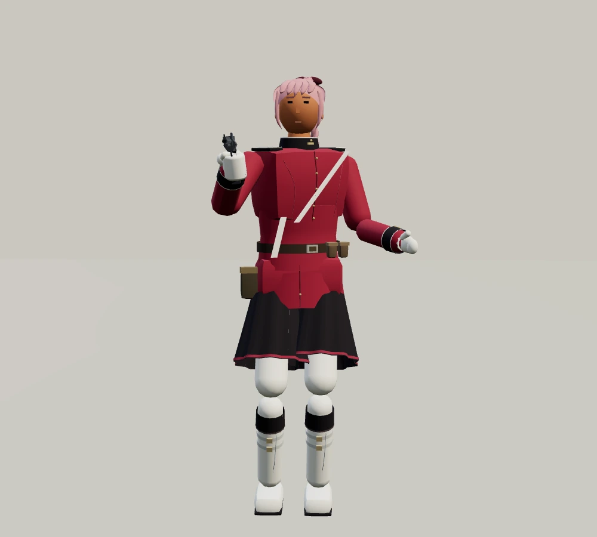
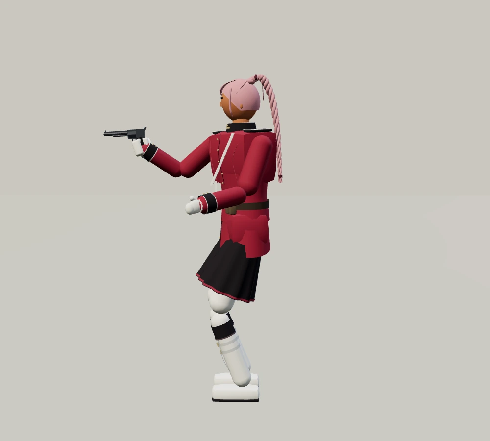
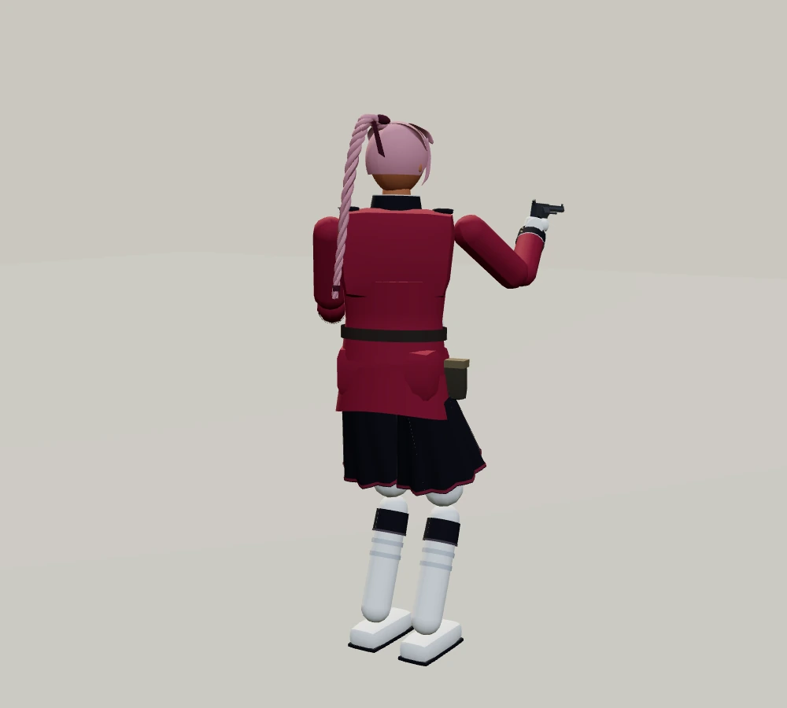

적막 · 최종전왕관의 기사
짙은 회색 갑주, 왕관형 투구, 긴 금발과 상아색 망토. 긴 여정의 마지막에서 당신을 기다립니다.
최종 보스와 바로 겨루기

왕관과 흰 망토

정면
옆모습
뒷모습일반 여정에서는 슈바르츠 다음에 등장합니다. 마지막 결투는 대성당을 무대로 하며, 승리하면 새 여정을 시작할 수 있습니다.
바로 겨루기에서 사용할 무기
 사인검 · 한손검
사인검 · 한손검 아이스 · 양손검
아이스 · 양손검